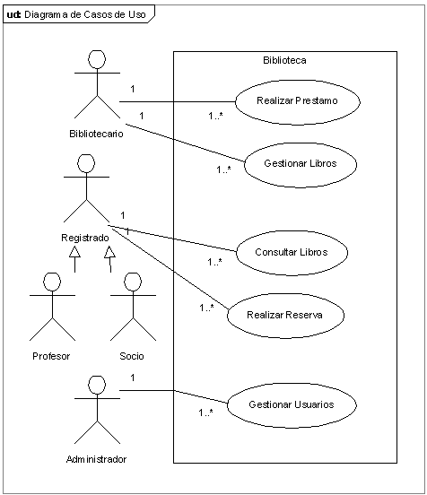
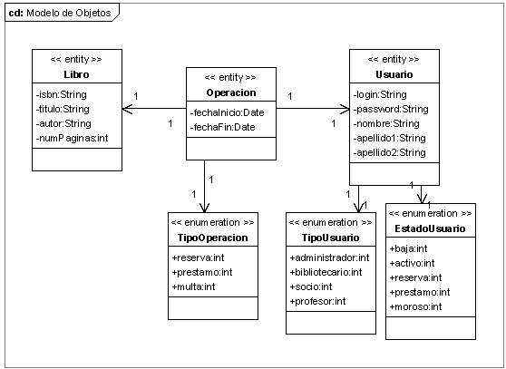
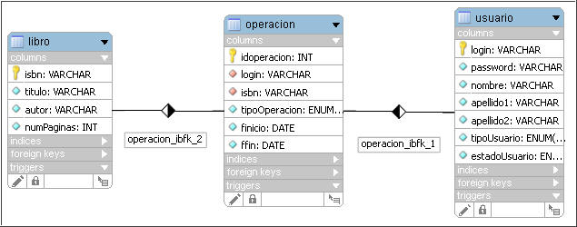
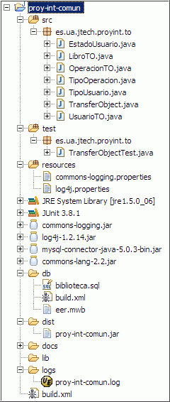

Caso de Estudio
Introducción
A partir de un supuesto básico de la gestión de una biblioteca, vamos a crear un caso de estudio completo que evolucionará conforme estudiemos las diferentes tecnologías de la plataforma Java Enterprise.
El objetivo de esta sesión es introducir el caso de estudio que vamos a desarrollar, definiendo el enunciado y el esqueleto inicial del problema.
Ingeniería de Requisitos
El Instituto de Educación Secundaria "jUA" nos ha encargado que desarrollemos una aplicación para la gestión de los préstamos realizados en la biblioteca del centro, lo que implica una gestión de los libros y de los alumnos y profesores que realizan estos prestamos.
Tras una serie de entrevistas y reuniones con diferente personal del centro, hemos llegado a recopilar esta información:
- Respecto a un usuario, nos interesa almacenar:
- Nombre y apellidos
- Login y password
-
Tipo de usuario. Posibles tipos:
- Administrador: encargado de configurar la aplicación y gestionar los usuarios.
- Bibliotecario: encargado de la gestión de prestamos y libros.
- Profesor
- Socio: ya sea un alumno o un familiar suyo
Tanto los profesores como los socios van a poder realizar préstamos sobre los libros, pero con diferentes permisos, tanto en número de libros como en duración del préstamo.
-
Estado de un usuario: baja, activo, reserva, préstamo y moroso
Los usuarios, al crearlos tendrá un estado activo, e irán pasando de estado conforme realicen operaciones. En el caso de que un usuario tenga un préstamo y una reserva, se almacenará el estado más importante, en este caso, el de reserva.
- Respecto a un libro, nos interesa almacenar:
- Titulo y autor
- ISBN
- Número de páginas
- Respecto a los prestamos, tras muchas entrevistas deducimos que tanto las reservas, como los prestamos y las multas tienen características comunes, como son:
- Fecha de inicio y finalización
- Usuario de la operación
- Libro de la operación
Respecto a las reglas para calcular el número de libros y la duración de los prestamos es la siguiente:
| Número Máximo de Libros | Días de Reserva | Días de Prestamo | |
|---|---|---|---|
| Socio | 3 | 5 | 7 |
| Profesor | 10 | 10 | 30 |
Por ejemplo, un socio solo puede reservar un máximo de 3 libros, teniendo 5 días para recoger el libro. Si a los 5 días de realizar la reserva no ha acudido a la biblioteca a formalizar el préstamo, se anulará la reserva, de modo que el libro quedará disponible. En cuanto a los prestamos, deberá devolver el libro como mucho una semana después.
En el momento que un usuario tenga una demora en la devolución de un préstamo, se considerará al usuario moroso y se le impondrá una penalización del doble de días de desfase durante los cuales no podrá ni reservar ni realizar préstamos de libros.
Casos de Uso
En un principio, el número de casos de uso es muy limitado. A lo largo del proyecto nos vamos a centrar en el desarrollo de los siguientes casos de uso:

Destacar que la validación de usuarios para todos los actores se considera una precondición que deben cumplir todos los casos de uso, y por lo tanto no se muestra en el diagrama.
Más adelante, conforme cambien los requisitos del cliente (que siempre cambian), puede que el sistema permita renovar los prestamos a los alumnos, que los usuarios registrados puedan modificar su información de usuario, que los bibliotecarios obtengan informes sobre libros más prestados y/o reservados, etc...
Análisis y Diseño OO
Para simplificar el planteamiento de la aplicación, vamos a partir de las siguientes premisas:
- No se permite más de una existencia de un libro. Es decir, sólo hay un ejemplar de cada libro, y la aplicación no permite libros repetidos.
- Un libro sólo tiene un autor.
Modelo de Objetos
A partir de los requisitos y tras unas sesiones de modelado, hemos llegado al siguiente modelo de objetos conceptual representado en el siguiente diagrama de clases:

El elemento central de nuestro sistema va a ser el objeto Operacion, el cual, dependiendo de un atributo enumerado, nos indicará si el objeto es un préstamo, una reserva o una multa. Además, se compone de un Libro y de un Usuario.
Estos objetos son Transfer Objects dentro del sistema, ya que realizan funciones de meros contenedores, los cuales viajarán por las capas de la aplicación.
Además, para asegurarnos que todos nuestros TOs sean Serializables y obtener rápidamente una representación del estado (mostrando los valores de todos los atributos), vamos a crear una clase abstracta que sobrecargue el método toString() y que obligue a implementar en todos los TOs el método TransferObject getData()
package es.ua.jtech.proyint.to;
import java.io.Serializable;
import org.apache.commons.lang.builder.ReflectionToStringBuilder;
/**
* Clase que representa un Transfer Object
*
* @author $Author: amedrano $
* @version $Revision: 1.3 $
*/
public abstract class TransferObject implements Serializable {
// crea un nuevo TO a partir de los datos del objeto
public abstract TransferObject getData();
public String toString() {
// librería commons-lang de jakarta
return ReflectionToStringBuilder.toString(this);
}
}
Del código hemos de destacar el uso de la librería commons-lang de Jakarta, la cual ofrece multitud de utilidades complementarias al API de java.lang, manipulación de cadenas, reflection, serialización, etc... En este caso utilizamos el método ReflectionToStringBuilder.toString(Object o) que nos devuelve una representación mediante un String de un objeto (por reflection).
Todos los TOs los vamos a definir dentro del paquete es.ua.jtech.proyint.to, y utilizaremos el prefijo TO para indicar que un objeto de la aplicación es un Transfer Object. Cada TOs se compone de 3 constructores (constructor vacío, constructor de copia, y constructor con todos los atributos del objeto) y de todos los getter/setter que encapsulan al objeto. Así pues, por ejemplo, la representación del Transfer Object LibroTO sería:
package es.ua.jtech.proyint.to;
/**
* Clase que representa un libro. Destacar que la app no permite 2 ejemplares de un mismo libro
*
* @author $Author: amedrano $
* @version $Revision: 1.3 $
*/
public class LibroTO extends TransferObject {
private static final long serialVersionUID = 5874144497759547336L;
private String isbn;
private String titulo;
private String autor;
private int numPaginas;
public LibroTO() {
super();
}
public LibroTO(String isbn, String titulo, String autor, int numPaginas) {
super();
this.init(isbn, titulo, autor, numPaginas);
}
public LibroTO(LibroTO libro) {
super();
this.init(libro.isbn, libro.titulo, libro.autor, libro.numPaginas);
}
private void init(String isbn, String titulo, String autor, int numPaginas) {
this.isbn = isbn;
this.titulo = titulo;
this.autor = autor;
this.numPaginas = numPaginas;
}
@Override
public LibroTO getData() {
return new LibroTO(this);
}
public String getAutor() {
return autor;
}
public void setAutor(String autor) {
this.autor = autor;
}
// resto de getters/setters
// ...
}
Modelo de Datos
A partir del modelo de objetos, la representación que vamos a utilizar del modelo EER es la siguiente:

Para permitir relaciones de muchos a muchos (M:N) entre Usuario y Libro hemos creado un campo autoincrementable en la tabla Operacion (el cual no aparece en el modelo de objetos). Mediante estos mecanismos vamos a permitir que un usuario realice un préstamo del mismo libro en fechas distintas. Para evitar este campo, podemos poner como clave primaria el conjunto de campos {login, isbn, fdesde}.
Destacar que las enumeraciones del modelo de objeto se han transformado en enumeraciones de la base de datos (esta es una característica propia de MySQL).
El script SQL de creación de la Base de Datos lo puedes descargar desde aquí. Además, para crear la base de datos, vamos a utilizar el siguiente script Ant que colocaremos en la carpeta db del proyecto.
<project name="BD" default="initBD" basedir="."> <target name="initBD"> <sql driver="com.mysql.jdbc.Driver" url="jdbc:mysql://localhost/" userid="root" password="" src="biblioteca.sql"> <classpath> <pathelement location="./lib/mysql-connector-java-5.0.3-bin.jar"/> </classpath> </sql> </target> </project>
Entorno de Desarrollo
A lo largo del proyecto, vamos a basarnos en la plataforma Eclipse WTP 1.5 + MySQL 5.0 (entregados en el DVD de inicio de curso). Más adelante, ya entrarán en juego el servidor web (Apache Tomcat) y el servidor de Aplicaciones (Bea Weblogic).
Dentro de las prácticas comunes a lo largo del proyecto tenemos:
- una estructura de proyecto limpia y estándar
- uso de logs para todo tipo de mensajes de debug y error
- uso de convenciones de código Java
- fichero Ant de construcción del proyecto
Estructura del Proyecto
La estructura que vamos a seguir a lo largo de todo el curso parte de la estructura que hemos utilizado al crear la estructura de un proyecto dentro de los ejercicios de Ant.
|  |
La organización de este proyecto es la siguiente
build
Estas tres carpetas fuentes deben dejar las clases compiladas en la misma carpeta. Normalmente, en aplicaciones Java, se utiliza la carpeta build
|
Gestión de Logs
Para la gestión de logs, pese a saber que log4j es la mejor oferta actual que existe en el mercado, para evitar problemas, vamos a utilizar el envoltorio ofrecido por las librerías commons de Jakarta, de modo que envolvamos a log4j.
La gestión de logs debe permitir que el fichero de logs cambie cada día (DailyRollingFileAppender), y que cada mensaje de log muestre:
- timestamp
- nivel
- mensaje
A Entregar
En esta sesión vamos a preparar la base para el resto de sesiones. Por ellos, debemos crear un proyecto Eclipse, al que llamaremos proy-int-comun, el cual contenga:
- estructura de proyecto, siguiendo la nomenclatura definida en el apartado anterior
- modelo de objetos dentro del paquete es.ua.jtech.proyint.to, implementando cada TO con los atributos representados en el diagrama UML, y teniendo en cuenta la relación de herencia con la la clase TransferObject y los constructores necesarios.
- prueba JUnit (TransferObjectTest) que compruebe que la representación de 2 objetos con los mismos valores devuelve una representación distinta (ya que son instancias diferentes). En cambio, si obtenemos la representación del mismo objeto 2 veces, si que será la misma.
- gestión de logs (proy-int-comun.log) con una política de cambios diarios
- fichero Ant de construcción del proyecto, con los objetivos compile, package, doc, clean y test
- estructura y despliegue de la base de datos
El trabajo a realizar se debe efectuar durante la sesión actual, por lo cual no debería ser necesario emplear tiempo extra. De todos modos, el plazo final de entrega será 2 días antes de la próxima sesión de integración.